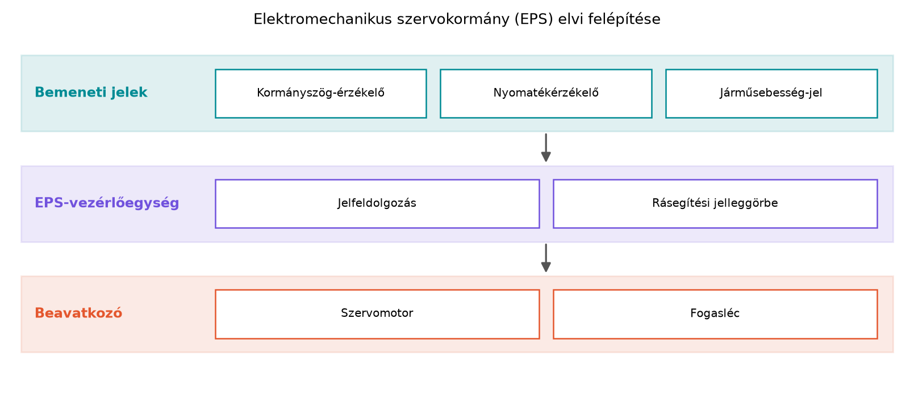

Egy ügyfél azzal hozza be a járművét, hogy parkolás közben „elfáradt a keze”, mert a kormányt csak nagy erővel tudja elforgatni. Ugyanezt a járművet autópályán viszont kellemesen feszesnek érzi. A műhelyben ilyenkor a szervokormány rendszerét vizsgáljuk: a hidraulikus rásegítésnél a folyadékot, a szivattyút és a szivárgást, az elektromechanikus rásegítésnél pedig a vezérlőegységet, a motoráramot és a kormányszög-érzékelő kalibrálását. A szervokormány ugyanis nem egyszerű luxuskiegészítő: a kormánynyomatékot a járműsebességhez és a vezetési helyzethez igazítja, és a mai vezetőtámogató rendszerek (ESP, sávtartó, parkolási asszisztens) is a kormányrendszer jeladóira épülnek.
Képzelj el egy fogasléces hidraulikus szervokormányt metszetben. A kormánykerék felől a kormánytengely egy vékony torziós rúd közbeiktatásával a fogasléc fogaskerekéhez kapcsolódik. A torziós rúd a kormányzási nyomaték hatására néhány fokot elcsavarodik. Ez az elcsavarodás mozgatja a szervoszelepet, amely a nyomás alatt lévő hidraulikafolyadékot a munkahenger egyik vagy másik oldalára irányítja. A fogaslécre épített dugattyúra ható nyomáskülönbség rásegít a kormányerőre, így a vezető csak a torziós rúd elcsavarásához szükséges kisebb nyomatékot érzi. Az elektromechanikus rendszerben ugyanez a torziós rúd egy nyomatékérzékelő központi eleme, a rásegítő erőt pedig villanymotor és fogasléc-áttétel hozza létre.

A fenti rétegábra azt mutatja, hogy az EPS-vezérlőegység a kormányszög-érzékelő, a nyomatékérzékelő és a járműsebesség-jel alapján dönt a villanymotor rásegítő nyomatékáról. A hidraulikus rendszerben ezt a feladatot mechanikusan a szervoszelep látja el, míg az elektromos rendszerben az ECU jelleggörbéi végzik.
Definíció. A kormányrásegítés (power steering) olyan berendezés, amely a kormánykeréken kifejtett vezetői nyomatékot a kerék elfordításához szükséges érték alá csökkenti úgy, hogy a hiányzó részt idegen energia (hidraulikus nyomás vagy villanymotor) biztosítja.
Definíció. A rásegítési tényező a kerékoldali teljes kormányzónyomaték és a kormánykeréken kifejtett nyomaték hányadosa:
A hidraulikus szervokormánynál a fogaslécre ható erőből és a fogaskerék-áttételből adódik; vezetői oldalról a szervoszelep torziós rúdjának elcsavarásához tartozó nyomaték a bemeneti jel.
Definíció. A kormányszög-érzékelő (steering angle sensor) a kormánykerék vagy a kormányoszlop abszolút vagy inkrementális szöghelyzetét méri, általában a teljes többfordulatú tartományban (például ±720°). Jele a járművezető kormányzási szándékát és a jármű tényleges kormányzott kerékhelyzetét közvetíti az ESP, az EPS és az ADAS rendszerek felé.
Definíció. A nyomatékérzékelő (torque sensor) a kormánykeréken kifejtett nyomatékot méri. Az EPS-rendszerek leggyakrabban a torziós rúd elcsavarodását érzékelik mágneses, induktív vagy optikai úton, és ebből számítják a pillanatnyi vezetői nyomatékot.
A hagyományos hidraulikus szervokormány fő részei: szivattyú, tartály, nyomócső, visszafolyócső, kormányműbe épített szervoszelep és munkahenger. A szivattyút általában a motor ékszíja hajtja, és olajáramot szállít a szervoszelephez. A szervoszelep jellemzően a kormánytengely és a fogaskerék közötti torziós rúdra épülő forgó tolattyú. Egyenes haladásnál a szelep középállású: a folyadék kis ellenálláson, munkavégzés nélkül kering vissza. Amikor a vezető elfordítja a kormányt, a torziós rúd elcsavarodik, a szelep elmozdul, és a nyomás alatti olajat a munkahenger megfelelő oldalára irányítja.
A rásegítő erő a munkahengerben:
ahol a nyomáskülönbség a dugattyú két oldala között, pedig a dugattyú effektív felülete. A szervoszelep így mechanikusan visszacsatolja a vezetői nyomatékot: ha a vezető elengedi a kormányt, a torziós rúd visszaáll, a szelep középhelyzetbe kerül, és a rásegítés megszűnik.
A szivattyú szállítása és nyomása a motor fordulatszámával is változhat, ezért a hidraulikus rendszert általában nyomáshatárolóval és áramlásszabályozóval egészítik ki. A sebességfüggő rásegítés célja, hogy parkoláskor nagy rásegítést adjon, autópályán viszont feszesebb kormányzást biztosítson. Régebbi rendszerekben ezt az áramlásszabályozóval vagy elektromosan vezérelt szeleppel (EVO) oldották meg.
Az (a) részen a kormány elfordításakor elcsavarodó torziós rúd a forgó tolattyút elmozdítja: a szivattyú nyomóága a munkahenger bal kamrájába jut (sötét, sraffozott), a jobb kamra a visszafolyó ágon a tartályba ürül, így a dugattyú a fogaslécet jobbra tolja. A (b) rész szemléltető görbéi szerint ugyanakkora vezetői nyomatékhoz álló járműnél nagy, autópályán kis rásegítés tartozik. A HTML-kiadásban a szelep állásai váltogathatók, a kalkulátor pedig az rásegítő erőt és a sebességfüggő jelleggörbét mutatja.
Az elektrohidraulikus szervokormány a hidraulikus rendszer előnyeit megtartja, de a szivattyút nem a belső égésű motor ékszíja, hanem fedélzeti hálózatról üzemeltetett villanymotor hajtja. A vezérlőegység a járműsebesség és a kormányzási nyomaték alapján szabályozza a szivattyú fordulatszámát. Parkoláskor magas fordulaton jár a szivattyú, egyenes haladásnál pedig alacsonyabb vagy csak alapjáraton, így energiát takarít meg. A hidraulikus oldal továbbra is olajos, tehát itt is kell olajszintet, szivárgást és olajminőséget ellenőrizni.
Az EPS-rendszerben nincs hidraulikafolyadék, nincs szivattyú és tartály. A rásegítő nyomatékot villanymotor hozza létre. A motort szerelhetik:
A C-EPS motorja és csigahajtóműve az utastérben, a kormányoszlopon ül; a P-EPS motorja a kormányfogaskerékre hajt; az R-EPS motorja szíjjal és golyósorsóval közvetlenül a fogaslécet mozgatja. Mindhárom kivitelben a torziós rúdra épülő nyomatékérzékelő méri a vezetői nyomatékot (a két rúdvég elfordulásának különbsége arányos vele), a kormányszög-érzékelő pedig a kormány helyzetét; mindkettő csere vagy javítás után kalibrálást igényel.
Az EPS-vezérlőegység bemenetei közé tartozik a nyomatékérzékelő, a kormányszög-érzékelő és a járműsebesség-jel. A vezérlő a rásegítési jelleggörbe alapján számítja ki a motoráramot. A motor által leadott nyomaték a mechanikus áttételen keresztül a fogaslécet segíti.
Az EPS előnye, hogy csak akkor fogyaszt áramot, amikor a kormányt elfordítják; nincs olaj, kisebb a környezetszennyezés, és a rásegítés könnyen járműsebesség-függővé tehető. Hátránya, hogy nagyobb terhelésnél (például álló járműnél, széles gumikkal) jelentős áramfelvétel léphet fel, és a kormányérzet finomhangolása elektronikus. A rendszer biztonsági szempontból redundáns figyelőáramköröket is tartalmazhat: ha az ECU hibát észlel, a rásegítést csökkenti vagy leállítja, és a műszercsoportban figyelmeztetést ad.
A kormányszög-érzékelő az EPS-ben nemcsak a rásegítés irányát és erősségét segíti, hanem az ESP számára is alapjelet ad. A jármű menetdinamikai szabályozása a kormányszög és a legyorsulás-érzékelő jelének összhangját vizsgálja. Ezért a kormányszög-érzékelő nullpontját és véghelyzeteit a gyártói diagnosztikai eljárás szerint kalibrálni kell: például a kormányt egyenes előre helyzetbe állítják, majd a rendszerteszterrel elvégzik a nullponttanítást. Ugyanez szükséges lehet az akkumulátor le- és felkötése, kormányműcsere, futómű-bemérés vagy a kormányoszlop javítása után.
Előírás. A kormányszög-érzékelő kalibrálását a gyártói diagnosztikai utasítás szerint, rendszerteszterrel kell elvégezni; a nullpontot és a végállásokat a kerékbeállítás és a kormányrendszer működésének ellenőrzése után kell betanítani (ellenőrizendő: gyártói javítási útmutató). A kormányrendszer biztonsági berendezés, ezért javítás és kalibrálás után a hibakód-tárolóból a bejegyzéseket is törölni kell, majd próbaúttal ellenőrizni a rásegítést.
Az aktív kormányzás (active front steering) a kormánykerék és a fogaskerék közé egy elektromosan vezérelt bolygóművet vagy más differenciálművet épít. A rendszer a kormánykerék szögétől és a járműsebességtől függően módosítja a tényleges kormányszöget. Parkoláskor nagyobb kerékszög érhető el kisebb kormánykerék-elfordítással, autópályán pedig közvetettebb, nyugodtabb áttétel valósul meg. Az aktív kormányzás gyakran az ESP-vel együttműködve ellenkormányzást is végezhet, ha a jármű destabilizálódik.
Az összkerék-kormányzás (rear wheel steering, all-wheel steering) a hátsó kerekeket kis szögben elfordítja. Kis sebességnél a hátsó kerekeket az elsőkkel ellentétes irányba fordítják, így csökken a fordulókör átmérője és javul a parkolási manőverezhetőség. Nagyobb sebességnél a hátsó kerekeket az elsőkkel azonos irányba, kis szögben fordítják, ami stabilabb sávtartást és gyorsabb, egyensúlyos irányváltást eredményez. A hátsó kormányzómű lehet elektromechanikus vagy hidraulikus működtetésű. A rendszer vezérlése a kormányszög-érzékelő, a sebességjel és a menetdinamikai szenzorok jeleire épül.
A sávtartó rendszer beavatkozása is a kormányrendszeren keresztül valósul meg: az EPS vagy az aktív kormányzás a vezető beavatkozásától függetlenül kis nyomatékot vagy szöget adhat a kormányrendszernek. Ezért a kormányszög-érzékelő kalibrálása, a kormányközép és a kerékbeállítás pontossága alapfeltétel.
Adott: Egy fogasléces hidraulikus szervokormány munkahengerének effektív dugattyúfelülete . A munkahenger két oldalán mért nyomáskülönbség . Keresett: a fogaslécet segítő erő.
Képlet és behelyettesítés:
Az egységeket SI-be váltva:
Eredmény: A rásegítő erő (tanulási példa). Ez a fogaslécet közvetlenül segíti; a kerékoldali nyomaték a fogaskerék sugarától függ.
Ellenőrzés: , így , és . A nagyságrend reális.
Adott: Egy EPS-szervomotor fedélzeti feszültsége , áramfelvétele csúcs terhelésnél , a motor és a vezérlő együttes hatásfoka . A motor fordulatszáma ebben a munkapontban . Keresett: a motor tengelyén leadott nyomaték.
Számítás lépésenként:
A felvett villamos teljesítmény:
A tengelyen leadott mechanikai teljesítmény:
A szögsebesség:
A nyomaték:
Eredmény: A szervomotor tengelyén leadott nyomaték kb. (tanulási példa). Ellenőrzés: az EPS-motor néhány Nm-es, ezres fordulatszámú villanymotor; a csigahajtás (például , ellenőrizendő) után a kormányoszlopon kb. (veszteség nélkül) – ez reális rásegítés. A fogaslécen ható rásegítő erő a mechanikus áttételtől függ.
Ellenőrzés: A mértékegység . A kapott érték a kormánymű áttételén át reális rásegítő nyomatékot adhat.
A szervokormány javítása és vizsgálata mindig a gyártói adatok szerint történik; az alábbi értékek tanulási példák.
Hidraulikus szervokormány (HPS/EHPS) ellenőrzőlista:
Elektromechanikus szervokormány (EPS) ellenőrzőlista:
Figyelem. A szervokormány javítása alatt a kormány hirtelen elfordulhat, ha a nyomatékérzékelő jele hibás vagy a motor beavatkozik. A kormányrendszert csak a gyártói utasítás szerint szabad szerelni, és az ujjakat távol kell tartani a mozgó fogasléctől, kardáncsuklóktól és villanymotor forgó alkatrészeitől. A pirotechnikai légzsák javítását a szervokormány bontása előtt külön kell kezelni.
Környezetvédelem. A hidraulikus szervokormány olaja veszélyes hulladék. A fáradt olajat jelölt edénybe kell gyűjteni, a kiömlött folyadékot nedvszívóval felitatni, és a hulladékot a veszélyes hulladékokra vonatkozó szabályok szerint leadni (jogszabály: hulladékgazdálkodási előírások – ellenőrizendő). Az EPS-rendszer elektronikai részei, motorja és vezérlője szintén nem háztartási hulladékban helyezhetők el.
Egy autószerelő műhelybe dízel középkategóriás autó érkezik. Az ügyfél panasza: „Kis sebességnél időnként nagyon nehéz a kormány, autópályán viszont túl könnyű, és a kormány jelzőlámpa is kigyullad.” A diagnosztikai műszer a kormányrendszer vezérlőegységében feszültségellátási hibát és kormányszög-érzékelő kalibrálási hibát tárol.
A szerelő először ellenőrzi a fedélzeti feszültséget: alapjáraton , terhelés alatt – ez elfogadható. A kormányrendszer tápcsatlakozóján azonban feszültségesést mér: a tápvezeték egyik nagyáramú csatlakozója a korábbi akkumulátorcsere után lazára volt húzva, emiatt melegedési nyomok is látszottak. A csatlakozó cseréje és a tápellátás javítása után a kormányszög-érzékelő nullpontját a mérőcsapos kerékbeállítás ellenőrzése után rendszerteszterrel kalibrálják. A hibakódokat törlik, a próbaúton a kormány kis sebességnél könnyű, autópályán megfelelően feszes, a visszajelző lámpa nem gyullad ki.
Valós eset tanulsága: az EPS-hiba nem mindig a motor vagy a szenzor belső hibája; a nagyáramú tápcsatlakozó meghibásodása, a testpont korróziója vagy a kalibrálás hiánya is okozhat nehéz kormányzást és hibakódot.
1. feladat (A). Definiáld a rásegítési tényezőt, és határozd meg a hidraulikus rásegítő erőt, ha és .
2. feladat (A). Tölts ki egy rövid táblázatot: HPS, EHPS és EPS összehasonlítása az energiaforrás, a folyadék jelenléte és a járműsebesség-függő szabályozás szerint.
3. feladat (B). Számítsd ki az EPS-szervomotor tengelynyomatékát, ha , , , a motor fordulatszáma .
4. feladat (B). Rendezd sorba a kormányszög-érzékelő kalibrálásának lépéseit: a) hibakódolvasás, b) kormány egyenes élő adat ellenőrzése, c) kerékbeállítás ellenőrzése, d) nullponttanítás diagnosztikai műszerrel, e) próbaút és hibakód-törlés. Add meg a helyes sorrendet, és indokold.
5. feladat (C). Magyarázd el, miért változtatja a rásegítést a járműsebesség függvényében az EPS, és hogyan befolyásolja a kormányszög-érzékelő jelének hibája az ESP és a sávtartó rendszer működését.
6. feladat (D). Egy EPS-es autó kormánya parkoláskor szakaszosan nehéz, a műszerfalon kigyullad a kormány hibajelző. A hibakód tárol: „kormányszög-érzékelő jel elfogadhatatlan”. Az élő adatban a kormányszög-érzékelő értéke egyenes kormányállásnál , a kormány elfordításakor ugrál. Mi lehet a hiba, és hogyan javítod?
1. A rásegítési tényező . , . .
2. Táblázat:
| Jellemző | HPS | EHPS | EPS |
|---|---|---|---|
| Energiaforrás | belső égésű motor által hajtott szivattyú | villanymotor hajtotta szivattyú | villanymotor közvetlenül a kormányművön |
| Hidraulikafolyadék | van | van | nincs |
| Sebességfüggő rásegítés | mechanikus/elektromos szelep | elektronikus szivattyúszabályozás | elektronikus jelleggörbe |
3. , . . .
4. Helyes sorrend: c) kerékbeállítás ellenőrzése, a) hibakódolvasás, b) kormány egyenes élő adat ellenőrzése, d) nullponttanítás diagnosztikai műszerrel, e) próbaút és hibakód-törlés. Indoklás: előbb a mechanikai alapot kell rendbe tenni, utána az elektronikus nullpontot tanítani, majd a javítást próbaúttal igazolni.
5. Parkoláskor a kormányzási ellenállás nagy, ezért nagy rásegítés kell; autópályán a feszesebb kormány javítja a stabilitást és a visszajelzést. Ha a kormányszög-érzékelő jele hibás, az ESP nem tudja, merre kormányoz a vezető, így hamis beavatkozást végezhet; a sávtartó rendszer pedig tévesen feltételezett sávközép-helyzetből indít kormányzást.
6. A eltérés és az ugráló jel a kormányszög-érzékelő kalibrálatlanságára vagy a szenzor mechanikai sérülésére utal. Először ellenőrizni kell a kormányközép és a kerékbeállítás mechanikai helyzetét, majd a szenzor csatlakozóját és rögzítését. Ha ép, a gyártói diagnosztikai műszerrel nullpont- és végállás-tanítást kell végezni; ha a jel továbbra is hibás, a szenzort ki kell cserélni.
A szervokormány a kormánykeréken kifejtett erőt csökkenti, a hiányzó részt hidraulikus nyomással vagy villanymotorral pótolja. A fogasléces hidraulikus rendszerben a torziós rúd elcsavarodása a szervoszelepet nyitja, így a munkahengerben rásegítő erő keletkezik. Az elektrohidraulikus rendszer elektromos szivattyúval dolgozik, az elektromechanikus szervokormány (EPS) pedig hidraulikafolyadék nélkül, nyomaték- és kormányszög-érzékelő jeleiből vezérel villanymotort. A kormányszög-érzékelő nullpontját a kerékbeállítás és a kormányközép ellenőrzése után rendszerteszterrel kalibrálni kell, mert jele az ESP, a sávtartó és az aktív kormányrendszerek számára alapvető. Az aktív kormányzás a kormányáttételt változtatja, az összkerék-kormányzás kis sebességnél ellentétes, nagy sebességnél azonos irányban kormányozza a hátsó kerekeket. A szervokormány javításánál a gyártói utasítás az elsődleges, a hidraulikaolajat nem szabad fékfolyadékkal helyettesíteni, és a hulladékot szakszerűen kell kezelni.
Továbbvitt eredmény. Az itt megismert EPS-működés és kalibrálási igény a Vezetőtámogató rendszerek és kalibrálásuk alfejezetben az ADAS-javításoknál, a Hidraulikus rendszerek és a szervokormány diagnosztikája alfejezetben a hibakeresésnél, valamint a Futómű és kormány szerelése: kerékcsapágy, szilent, gömbcsukló, rugó, lengéscsillapító, kormánymű alfejezetben a szerelési gyakorlatnál tér vissza. A kormányszög-érzékelő kalibrálásának kötelező lépéseit ott is el kell végezni.
Forrástípusok: ENSZ-EGB előírás a kormányberendezésre (ECE R79 – ellenőrizendő), gyártói javítási utasítások és diagnosztikai folyamatok, járműrendszer-szintű típusjóváhagyási követelmények.
Ellenőrizendő: a hivatkozott ECE-előírás száma és hatálya; a gyártói szivattyúnyomás, motoráram, kalibrálási és meghúzási nyomaték értékek; a hulladékgazdálkodási jogszabályok aktuális megnevezése és az EPS-akkumulátor-leválasztás utáni tanítási követelmények. A példákban szereplő számértékek tanulási példák, nem gyártói adatok.